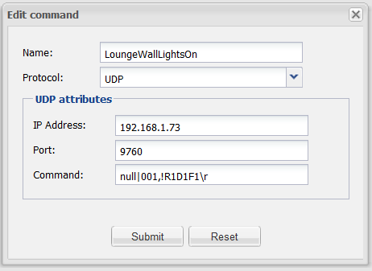

Hello noble community. Ok thats enough creeping 
I have a new LightwaveRF system and received the API yesterday and can now use OpenRemote to control my devices.....great.
Ok, now the problem. LightwaveRF has a UDP interface with a transmit port (9760) and a receive port (9761) . I have tried setting up a UDPListener switch/query/status so that i can show replies from the light wave system, including command acknowledgements, energy monitor data and so forth, but can't seem to get it to work.
Does anyone have any experience with reading status or messages and parsing them into status information using udp listener or any experience with receiving messages from lightwaverf into OpenRemote?
Look forward to being called a noob, and being told the answer is simple....
Thanks
{kind=link}
|
Oh, I should probably add that when i do create a UDP Listener item, my console debug window says... Help? Thanks |
|
If you want to create your own protocol to support your device check here: http://www.openremote.org/display/docs/OpenRemote+2.0+Developer+Tutorial If you have to send something on potz 9760 and then receive the answer on 9761, this is not supported with the UDPProtocol. |
|
Martyn, We were discussing LightwaveRF briefly today. Did you have success with the UDP to control your Lightwave system? Best regards, – Juha |
|
Hi Marcus Yes and no. UDP messages to the lightwaveRF wifi link - yes, completely. Works perfectly. However getting the UDP Listener to see the response - no (sadly). So in short - yes I can control things perfectly, but no, I can t get 2_way Co Ms. Hope this helps. |
|
What kind of information do you want to receive from UDP? I use it e.g. to listen for message from IRTrans which include a remote name and button name when I push a button on an infrared remote. The UDPListener cannot receive any information and use the data inside a sensor yet. |
|
Hi Marcus Yes, I think this is worth me trying again. Thanks for the info. |
|
Ok, I will also try and put together a small How-To for the UDPListener and how I use it. |
|
That would be very helpful, thanks Marcus. |
|
This would be very usefull. |
|
Some info can be found here: http://www.openremote.org/display/forums/Sending+generic+TCPIP+events+to+Eventghost |
|
I have been trying for a few days but am still not having any luck. I have the lightwaverf wifi link and a 1 gang dimmer switch. I can get the switch working from the lightwave app but I am unable to get openremote to talk to it with the UDP commands. If anyone has a step by step how to guide with some screen shots or detailed description then this will be very helpful. Not sure if I need to create a new rule in the designer or something. Any help on this matter will be greatly appreciated. |
|
Hi Jordan I'll try to help. Three things to check first off... (in no particular order) 1. Have you "Registered" your PC/Pi (or whatever the OR Controller is running on) with the LightwaveRF WiFi Link?. Easy to check... just send your OR command over UDP and look at the WiFi Link LCD screen and it might say "Do you want to register this device" (or something).... you get an option for "yes" or "no". No LightwaveRF commands will work if the controller is not "Registered". 2. Does your LightwaveRF Command look like this? 
(obviously your IP address will be different for your LightwaveRF) 3. Have you set your WiFi Link IP Address to a Static Address? Let me know the answers to the above and I will try to help further if I can.... mine is working flawlessly (that's not meant to be a brag |
|
Martyn, brag away. Would be interested in getting LightwaveRF more solidly supported by OpenRemote (with documentation and certifying it for integrators). Would need someone to take a lead on this, who can support and test the equipment, who can provide the wiki howto page and who we can reach out to for professional engagements that include LightwaveRF. Would that be something of interest to you? |
|
Feel free to ping me directly on email at juha at openremote dot org or skype 'juhalindfors' if you prefer to discuss privately. |
|
This worked great thanks, I had missed out the "null|" on the command and I think this is where the problem lied. I have also got this working with a Raspberry Pi as the controller and this works great. Thanks for the help |
|
Hope I'm not hijacking this thread, but since I think you're discussing what I'm trying to do I thought this would be a good place to ask. I've got a dimmer light switch and a 2-gang plug socket that I'm trying to create a slider (for the dimmer) and switches for the plug sockets. I've got as far as being able to create separate buttons for on/off and varying levels of dimming, but I'd much rather have one switch for the plug sockets (press once to switch on, again to turn off) and a scalable slider to have more control over the lighting ambience. If I understand this correctly, the switches and dimmers need feedback from the light switch and plug sockets - is that right? I know there's some limitations to what can be done with LightwaveRF and sensors at the minute, does it go as far as rendering what I'm trying to do impossible? |
|
I think it will require either a generic UDP listener implementation (which is not present yet) or a dedicated protocol implementation for LightwaveRF. So at the moment having feedback from LW RF seems not possible, unless I've missed some critical points in the earlier discussions. A more generic UDP listener that could solve this issue for Lightwave (depending on the complexity of the protocol) is something on the to-do list. |
|
Hi Pete. What you're looking for can't (currently) be done without some intermediary hardware/software. The problem is that OR "switches" and "sliders" send out their commands, but they alter their state (or level), not based on what they send out (the command), but instead based on what they receive back after a Query poll. So the Protocol works like this; 1. -> Command So OR is constantly querying status or level from the device (in your case LightwaveRF). If you have a "Button" and you press it, the command will be "On" (or whatever), but the Query will ALWAYS return a null because LightwaveRF is a ONE WAY protocol (i.e. no feedback). So the Button state will never change - because Null is always the same. The way I have gotten round this (and it's not perfect), is to use an RPi to act as the LightwaveRF controller. the RPi maintains the current state of the LightwaveRF device (a buffer if you like) and returns it to OR following the Query. This ONLY works if you ONLY use the RPi to change the LightwaveRF state - if you use the RPi to turn the light on, and then use a LightwaveRF controller to turn it off again, the RPi will not know it has been turned off, and will report to OR that it is still on. You might be interested to know that LightwaveRF has been developed with the <future> capability for 2-way communication which will solve this issue and make LightwaveRF MUCH more useful. However, we are all still waiting for the "soon to be released early in Q1" software and new products... there does seem to be a problem over there at LWRF. As an example, take a look at their website and you will see fresh screenshots of a brand new Android and Apple App, but the Apps have not been released yet and GooglePlay and Apple stores are still only offering the legacy versions of the Apps which are old, tired and clunky. the "fresh new Apps" screenshots from the LightwaveRF website have been on there for over 6 months now, and nothing has been released. so I wouldn't hold your breath here (sadly). Hope this helps a little? |
|
.... of course, you can create an internal variable in OR, and set the UDP Listener to set/clear that variable when it receives something that you Regx parse, and use the Button Polling to poll the variable and not the device, but you will have the problem that LightwaveRF only ACK's your Query, it does not return ON/OFF/Level status.... |
|
Wow, thanks for such an informative reply! I feel like I've learned a lot - the main thing being, wait for LightwaveRF to pull their finger out ;oD At least I know it's sort of possible, but not with the knowledge/time/skills I have, so you've saved me a lot of time trying. Thanks again |
|
For an example of how to control LightwaveRF devices directly using their RF protocol via an Arduino, rather than using the Wifi link, see Emails, Text-to-Speech, Serial Port. |
|
Can you post your syntax? null|001,!R1D1F1\r Nothing happens - not even a "Device not registered" |
|
Scratch that - in the preview designer I ran tcpdump on my *nix box and found it was transmitting "null|" |